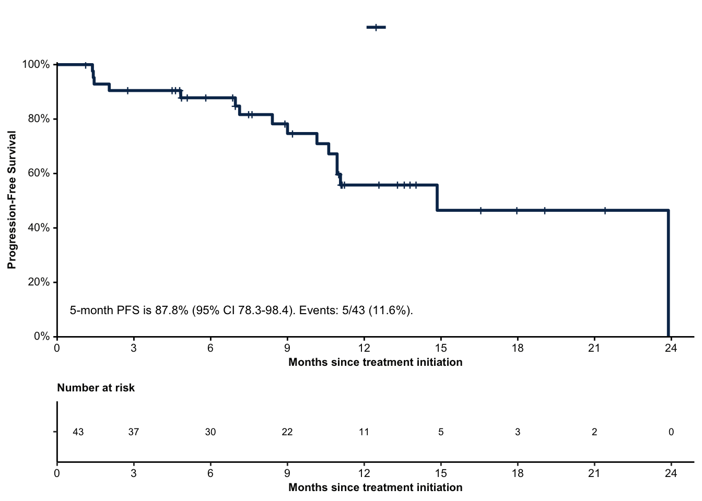
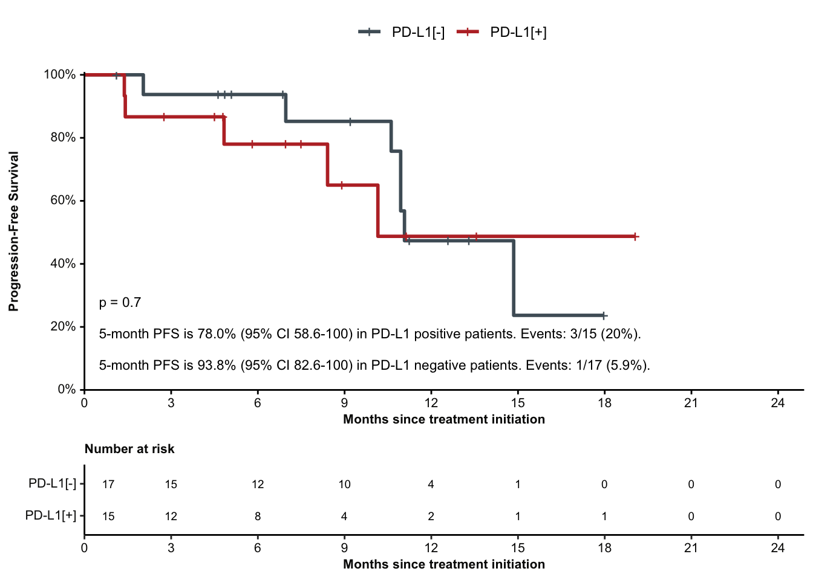
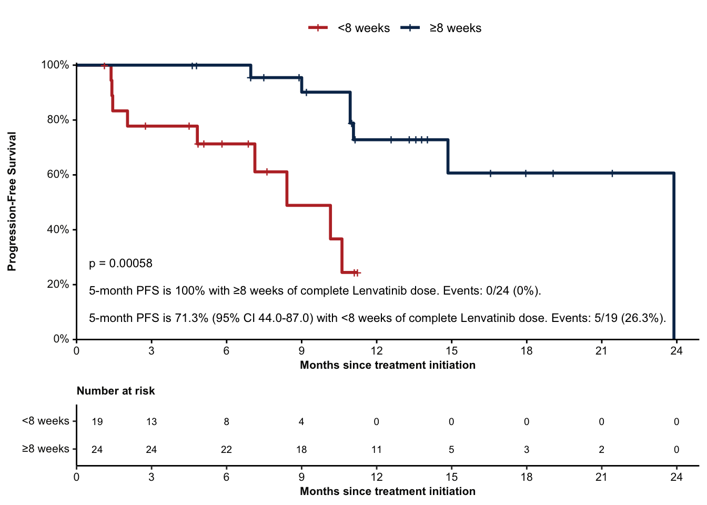
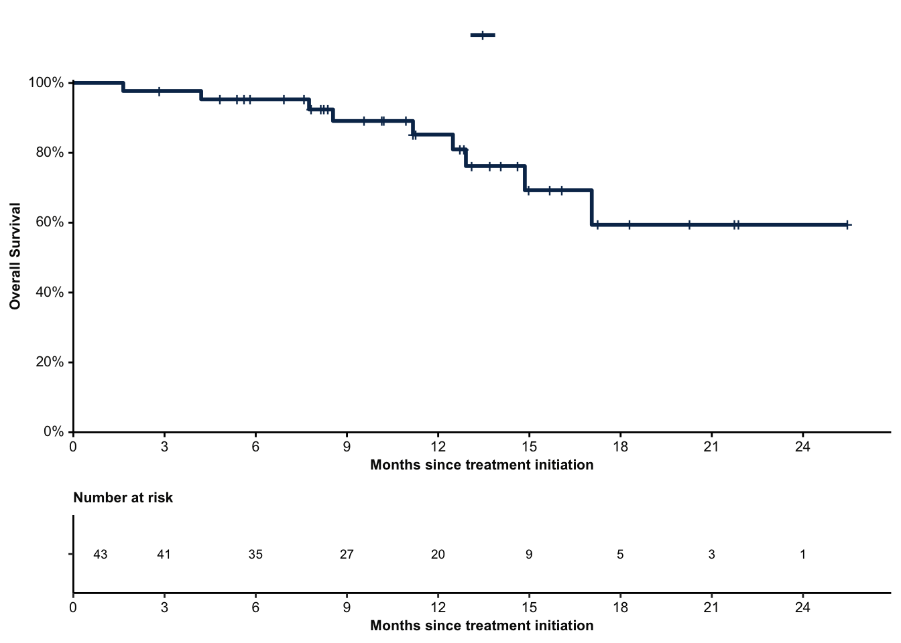
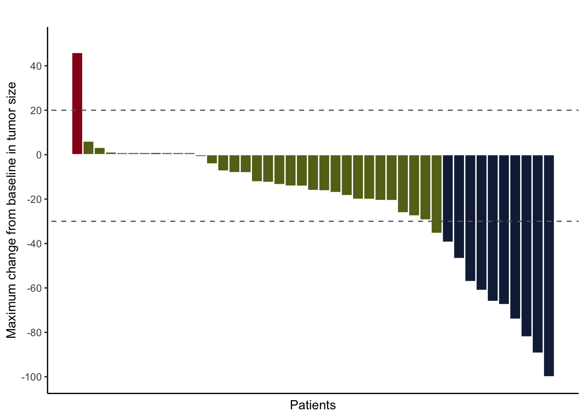
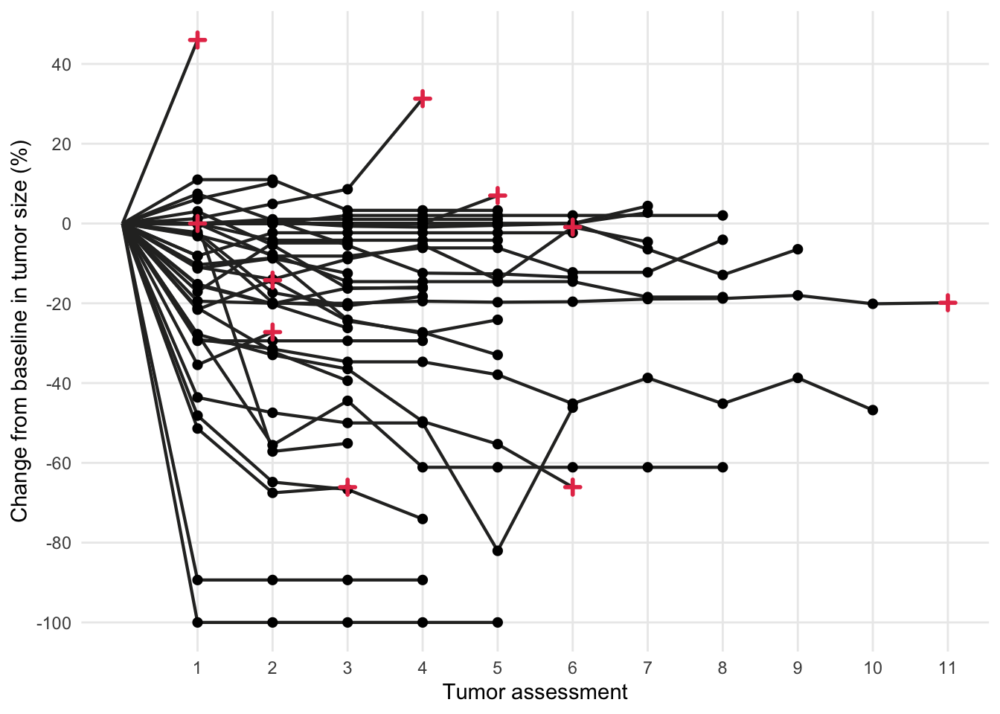

Last updated: 2024-08-27
Checks: 7 0
Knit directory: PECATI/
This reproducible R Markdown analysis was created with workflowr (version 1.7.1). The Checks tab describes the reproducibility checks that were applied when the results were created. The Past versions tab lists the development history.
Great! Since the R Markdown file has been committed to the Git repository, you know the exact version of the code that produced these results.
Great job! The global environment was empty. Objects defined in the global environment can affect the analysis in your R Markdown file in unknown ways. For reproduciblity it’s best to always run the code in an empty environment.
The command set.seed(20231024) was run prior to running
the code in the R Markdown file. Setting a seed ensures that any results
that rely on randomness, e.g. subsampling or permutations, are
reproducible.
Great job! Recording the operating system, R version, and package versions is critical for reproducibility.
Nice! There were no cached chunks for this analysis, so you can be confident that you successfully produced the results during this run.
Great job! Using relative paths to the files within your workflowr project makes it easier to run your code on other machines.
Great! You are using Git for version control. Tracking code development and connecting the code version to the results is critical for reproducibility.
The results in this page were generated with repository version a3df593. See the Past versions tab to see a history of the changes made to the R Markdown and HTML files.
Note that you need to be careful to ensure that all relevant files for
the analysis have been committed to Git prior to generating the results
(you can use wflow_publish or
wflow_git_commit). workflowr only checks the R Markdown
file, but you know if there are other scripts or data files that it
depends on. Below is the status of the Git repository when the results
were generated:
Ignored files:
Ignored: .DS_Store
Ignored: .Rhistory
Ignored: .Rproj.user/
Ignored: analysis/.DS_Store
Ignored: data/
Untracked files:
Untracked: output/(old) PECATI_lenvatinib-modifications_8w_2024-08-19.xlsx
Untracked: output/PECATI_12-mo_OS_global_2024-08-14.png
Untracked: output/PECATI_12-mo_OS_global_2024-08-16.png
Untracked: output/PECATI_12-mo_OS_global_2024-08-26.png
Untracked: output/PECATI_12-mo_OS_global_2024-08-27.png
Untracked: output/PECATI_12_or_recist_2024-06-20.xlsx
Untracked: output/PECATI_5-mo_PFS_PD-L1_2024-08-14.png
Untracked: output/PECATI_5-mo_PFS_PD-L1_2024-08-16.png
Untracked: output/PECATI_5-mo_PFS_PD-L1_2024-08-26.png
Untracked: output/PECATI_5-mo_PFS_PD-L1_2024-08-27.png
Untracked: output/PECATI_5-mo_PFS_PP_2024-08-14.png
Untracked: output/PECATI_5-mo_PFS_PP_2024-08-16.png
Untracked: output/PECATI_5-mo_PFS_PP_2024-08-26.png
Untracked: output/PECATI_5-mo_PFS_PP_2024-08-27.png
Untracked: output/PECATI_5-mo_PFS_global_2024-02-09.png
Untracked: output/PECATI_5-mo_PFS_global_2024-02-14.png
Untracked: output/PECATI_5-mo_PFS_global_2024-02-15.png
Untracked: output/PECATI_5-mo_PFS_global_2024-02-16.png
Untracked: output/PECATI_5-mo_PFS_global_2024-02-21.png
Untracked: output/PECATI_5-mo_PFS_global_2024-02-22.png
Untracked: output/PECATI_5-mo_PFS_global_2024-03-13.png
Untracked: output/PECATI_5-mo_PFS_global_2024-03-25.png
Untracked: output/PECATI_5-mo_PFS_global_2024-05-02.png
Untracked: output/PECATI_5-mo_PFS_global_2024-05-23.png
Untracked: output/PECATI_5-mo_PFS_global_2024-08-13.png
Untracked: output/PECATI_5-mo_PFS_global_2024-08-14.png
Untracked: output/PECATI_5-mo_PFS_global_2024-08-16.png
Untracked: output/PECATI_5-mo_PFS_global_2024-08-26.png
Untracked: output/PECATI_5mo_PFS_global_2024-08-26.png
Untracked: output/PECATI_5mo_PFS_global_2024-08-27.png
Untracked: output/PECATI_ESMO-2024_v.1.0.pptx
Untracked: output/PECATI_ESMO-2024_v.1.1_rev_JR.pptx
Untracked: output/PECATI_ESMO-2024_v.1.1_rev_JR_DA.pptx
Untracked: output/PECATI_ESMO-2024_v.1.2_rev_JR_DA.pptx
Untracked: output/PECATI_ORR_confirmed_waterfall_/
Untracked: output/PECATI_ORR_confirmed_waterfall_2024-07-17.png
Untracked: output/PECATI_OS_global_2024-02-09.png
Untracked: output/PECATI_OS_global_2024-02-14.png
Untracked: output/PECATI_OS_global_2024-02-15.png
Untracked: output/PECATI_OS_global_2024-02-16.png
Untracked: output/PECATI_OS_global_2024-02-21.png
Untracked: output/PECATI_OS_global_2024-02-22.png
Untracked: output/PECATI_OS_global_2024-03-13.png
Untracked: output/PECATI_OS_global_2024-03-25.png
Untracked: output/PECATI_OS_global_2024-05-02.png
Untracked: output/PECATI_OS_global_2024-05-23.png
Untracked: output/PECATI_OS_global_2024-08-13.png
Untracked: output/PECATI_OS_global_2024-08-26.png
Untracked: output/PECATI_PFS_global_2024-02-09.png
Untracked: output/PECATI_PFS_global_2024-02-14.png
Untracked: output/PECATI_PFS_global_2024-02-15.png
Untracked: output/PECATI_PFS_global_2024-02-16.png
Untracked: output/PECATI_PFS_global_2024-02-21.png
Untracked: output/PECATI_PFS_global_2024-02-22.png
Untracked: output/PECATI_PFS_global_2024-03-13.png
Untracked: output/PECATI_PFS_global_2024-03-25.png
Untracked: output/PECATI_PFS_global_2024-05-02.png
Untracked: output/PECATI_PFS_global_2024-08-13.png
Untracked: output/PECATI_PFS_global_2024-08-26.png
Untracked: output/PECATI_aes_discontinuations_table_2024-02-09.docx
Untracked: output/PECATI_aes_discontinuations_table_2024-02-13.docx
Untracked: output/PECATI_aes_discontinuations_table_2024-02-14.docx
Untracked: output/PECATI_aes_discontinuations_table_2024-02-15.docx
Untracked: output/PECATI_aes_discontinuations_table_2024-02-16.docx
Untracked: output/PECATI_aes_discontinuations_table_2024-02-21.docx
Untracked: output/PECATI_aes_discontinuations_table_2024-02-22.docx
Untracked: output/PECATI_aes_discontinuations_table_2024-03-13.docx
Untracked: output/PECATI_aes_discontinuations_table_2024-03-25.docx
Untracked: output/PECATI_aes_discontinuations_table_2024-05-02.docx
Untracked: output/PECATI_aes_discontinuations_table_2024-06-07.docx
Untracked: output/PECATI_aes_discontinuations_table_2024-06-21.docx
Untracked: output/PECATI_aes_discontinuations_table_2024-08-13.docx
Untracked: output/PECATI_aes_discontinuations_table_2024-08-26.docx
Untracked: output/PECATI_aes_discontinuations_table_2024-08-27.docx
Untracked: output/PECATI_aes_dose-reductions_table_2024-02-15.docx
Untracked: output/PECATI_aes_dose-reductions_table_2024-02-16.docx
Untracked: output/PECATI_aes_dose-reductions_table_2024-02-21.docx
Untracked: output/PECATI_aes_dose-reductions_table_2024-02-22.docx
Untracked: output/PECATI_aes_dose-reductions_table_2024-03-13.docx
Untracked: output/PECATI_aes_dose-reductions_table_2024-03-25.docx
Untracked: output/PECATI_aes_dose-reductions_table_2024-05-02.docx
Untracked: output/PECATI_aes_dose-reductions_table_2024-06-07.docx
Untracked: output/PECATI_aes_dose-reductions_table_2024-06-21.docx
Untracked: output/PECATI_aes_dose-reductions_table_2024-08-13.docx
Untracked: output/PECATI_aes_dose-reductions_table_2024-08-26.docx
Untracked: output/PECATI_aes_dose-reductions_table_2024-08-27.docx
Untracked: output/PECATI_aes_table_2024-02-09.docx
Untracked: output/PECATI_aes_table_2024-02-13.docx
Untracked: output/PECATI_aes_table_2024-02-14.docx
Untracked: output/PECATI_aes_table_2024-02-15.docx
Untracked: output/PECATI_aes_table_2024-02-16.docx
Untracked: output/PECATI_aes_table_2024-02-21.docx
Untracked: output/PECATI_aes_table_2024-02-22.docx
Untracked: output/PECATI_aes_table_2024-03-13.docx
Untracked: output/PECATI_aes_table_2024-03-25.docx
Untracked: output/PECATI_aes_table_2024-05-02.docx
Untracked: output/PECATI_aes_table_2024-06-07.docx
Untracked: output/PECATI_aes_table_2024-06-21.docx
Untracked: output/PECATI_aes_table_2024-08-13.docx
Untracked: output/PECATI_aes_table_2024-08-26.docx
Untracked: output/PECATI_aes_table_2024-08-27.docx
Untracked: output/PECATI_irAEs_2024-08-19.xlsx
Untracked: output/PECATI_lenvatinib-modifications_8w_2024-08-19.xlsx
Untracked: output/PECATI_lenvatinib_dose2024-02-15.png
Untracked: output/PECATI_lenvatinib_dose2024-02-16.png
Untracked: output/PECATI_lenvatinib_dose2024-02-21.png
Untracked: output/PECATI_lenvatinib_dose2024-02-22.png
Untracked: output/PECATI_lenvatinib_dose2024-03-13.png
Untracked: output/PECATI_lenvatinib_dose2024-03-25.png
Untracked: output/PECATI_lenvatinib_dose2024-05-02.png
Untracked: output/PECATI_lenvatinib_dose2024-05-23.png
Untracked: output/PECATI_lenvatinib_dose2024-06-14.png
Untracked: output/PECATI_lenvatinib_dose2024-08-13.png
Untracked: output/PECATI_lenvatinib_dose2024-08-16.png
Untracked: output/PECATI_lenvatinib_dose2024-08-26.png
Untracked: output/PECATI_saes_g3_table_2024-02-15.docx
Untracked: output/PECATI_saes_g3_table_2024-02-16.docx
Untracked: output/PECATI_saes_g3_table_2024-02-21.docx
Untracked: output/PECATI_saes_g3_table_2024-02-22.docx
Untracked: output/PECATI_saes_g3_table_2024-03-13.docx
Untracked: output/PECATI_saes_g3_table_2024-03-25.docx
Untracked: output/PECATI_saes_g3_table_2024-05-02.docx
Untracked: output/PECATI_saes_g3_table_2024-06-07.docx
Untracked: output/PECATI_saes_g3_table_2024-06-21.docx
Untracked: output/PECATI_saes_g3_table_2024-08-13.docx
Untracked: output/PECATI_saes_g3_table_2024-08-26.docx
Untracked: output/PECATI_saes_g3_table_2024-08-27.docx
Untracked: output/PECATI_saes_table_2024-02-09.docx
Untracked: output/PECATI_saes_table_2024-02-13.docx
Untracked: output/PECATI_saes_table_2024-02-14.docx
Untracked: output/PECATI_saes_table_2024-02-15.docx
Untracked: output/PECATI_saes_table_2024-02-16.docx
Untracked: output/PECATI_saes_table_2024-02-21.docx
Untracked: output/PECATI_saes_table_2024-02-22.docx
Untracked: output/PECATI_saes_table_2024-03-13.docx
Untracked: output/PECATI_saes_table_2024-03-25.docx
Untracked: output/PECATI_saes_table_2024-05-02.docx
Untracked: output/PECATI_saes_table_2024-06-07.docx
Untracked: output/PECATI_saes_table_2024-06-21.docx
Untracked: output/PECATI_saes_table_2024-08-13.docx
Untracked: output/PECATI_saes_table_2024-08-26.docx
Untracked: output/PECATI_saes_table_2024-08-27.docx
Untracked: output/PECATI_spider_TAs_2024-08-14.png
Untracked: output/PECATI_spider_TAs_2024-08-16.png
Untracked: output/PECATI_spider_TAs_2024-08-26.png
Untracked: output/PECATI_spider_TAs_2024-08-27.png
Untracked: output/PECATI_swimmer-plot_patient-disposition_2024-02-09.png
Untracked: output/PECATI_swimmer-plot_patient-disposition_2024-02-13.png
Untracked: output/PECATI_swimmer-plot_patient-disposition_2024-02-14.png
Untracked: output/PECATI_swimmer-plot_patient-disposition_2024-02-15.png
Untracked: output/PECATI_swimmer-plot_patient-disposition_2024-02-16.png
Untracked: output/PECATI_swimmer-plot_patient-disposition_2024-02-21.png
Untracked: output/PECATI_swimmer-plot_patient-disposition_2024-02-22.png
Untracked: output/PECATI_swimmer-plot_patient-disposition_2024-03-13.png
Untracked: output/PECATI_swimmer-plot_patient-disposition_2024-03-25.png
Untracked: output/PECATI_swimmer-plot_patient-disposition_2024-05-02.png
Untracked: output/PECATI_swimmer-plot_patient-disposition_2024-05-23.png
Untracked: output/PECATI_swimmer-plot_patient-disposition_2024-06-07.png
Untracked: output/PECATI_swimmer-plot_patient-disposition_2024-06-14.png
Untracked: output/PECATI_swimmer-plot_patient-disposition_2024-08-13.png
Untracked: output/PECATI_swimmer-plot_patient-disposition_2024-08-16.png
Untracked: output/PECATI_swimmer-plot_patient-disposition_2024-08-26.png
Untracked: output/PECATI_swimmer-plot_patient-disposition_2024-08-27.png
Untracked: output/swimmer-spider-plot/PECATI_site-0102_TAs_2024-02-09.png
Untracked: output/swimmer-spider-plot/PECATI_site-0102_TAs_2024-02-13.png
Untracked: output/swimmer-spider-plot/PECATI_site-0102_TAs_2024-02-14.png
Untracked: output/swimmer-spider-plot/PECATI_site-0102_TAs_2024-02-15.png
Untracked: output/swimmer-spider-plot/PECATI_site-0102_TAs_2024-02-16.png
Untracked: output/swimmer-spider-plot/PECATI_site-0102_TAs_2024-02-21.png
Untracked: output/swimmer-spider-plot/PECATI_site-0102_TAs_2024-02-22.png
Untracked: output/swimmer-spider-plot/PECATI_site-0102_TAs_2024-03-13.png
Untracked: output/swimmer-spider-plot/PECATI_site-0102_TAs_2024-03-25.png
Untracked: output/swimmer-spider-plot/PECATI_site-0102_TAs_2024-05-02.png
Untracked: output/swimmer-spider-plot/PECATI_site-0102_TAs_2024-05-23.png
Untracked: output/swimmer-spider-plot/PECATI_site-0102_TAs_2024-06-07.png
Untracked: output/swimmer-spider-plot/PECATI_site-0102_TAs_2024-06-14.png
Untracked: output/swimmer-spider-plot/PECATI_site-0102_TAs_2024-08-13.png
Untracked: output/swimmer-spider-plot/PECATI_site-0102_TAs_2024-08-16.png
Untracked: output/swimmer-spider-plot/PECATI_site-0102_TAs_2024-08-26.png
Untracked: output/swimmer-spider-plot/PECATI_site-0103_TAs_2024-02-09.png
Untracked: output/swimmer-spider-plot/PECATI_site-0103_TAs_2024-02-13.png
Untracked: output/swimmer-spider-plot/PECATI_site-0103_TAs_2024-02-14.png
Untracked: output/swimmer-spider-plot/PECATI_site-0103_TAs_2024-02-15.png
Untracked: output/swimmer-spider-plot/PECATI_site-0103_TAs_2024-02-16.png
Untracked: output/swimmer-spider-plot/PECATI_site-0103_TAs_2024-02-21.png
Untracked: output/swimmer-spider-plot/PECATI_site-0103_TAs_2024-02-22.png
Untracked: output/swimmer-spider-plot/PECATI_site-0103_TAs_2024-03-13.png
Untracked: output/swimmer-spider-plot/PECATI_site-0103_TAs_2024-03-25.png
Untracked: output/swimmer-spider-plot/PECATI_site-0103_TAs_2024-05-02.png
Untracked: output/swimmer-spider-plot/PECATI_site-0103_TAs_2024-05-23.png
Untracked: output/swimmer-spider-plot/PECATI_site-0103_TAs_2024-06-07.png
Untracked: output/swimmer-spider-plot/PECATI_site-0103_TAs_2024-06-14.png
Untracked: output/swimmer-spider-plot/PECATI_site-0103_TAs_2024-08-13.png
Untracked: output/swimmer-spider-plot/PECATI_site-0103_TAs_2024-08-16.png
Untracked: output/swimmer-spider-plot/PECATI_site-0103_TAs_2024-08-26.png
Untracked: output/swimmer-spider-plot/PECATI_site-0105_TAs_2024-02-09.png
Untracked: output/swimmer-spider-plot/PECATI_site-0105_TAs_2024-02-13.png
Untracked: output/swimmer-spider-plot/PECATI_site-0105_TAs_2024-02-14.png
Untracked: output/swimmer-spider-plot/PECATI_site-0105_TAs_2024-02-15.png
Untracked: output/swimmer-spider-plot/PECATI_site-0105_TAs_2024-02-16.png
Untracked: output/swimmer-spider-plot/PECATI_site-0105_TAs_2024-02-21.png
Untracked: output/swimmer-spider-plot/PECATI_site-0105_TAs_2024-02-22.png
Untracked: output/swimmer-spider-plot/PECATI_site-0105_TAs_2024-03-13.png
Untracked: output/swimmer-spider-plot/PECATI_site-0105_TAs_2024-03-25.png
Untracked: output/swimmer-spider-plot/PECATI_site-0105_TAs_2024-05-02.png
Untracked: output/swimmer-spider-plot/PECATI_site-0105_TAs_2024-05-23.png
Untracked: output/swimmer-spider-plot/PECATI_site-0105_TAs_2024-06-07.png
Untracked: output/swimmer-spider-plot/PECATI_site-0105_TAs_2024-06-14.png
Untracked: output/swimmer-spider-plot/PECATI_site-0105_TAs_2024-08-13.png
Untracked: output/swimmer-spider-plot/PECATI_site-0105_TAs_2024-08-16.png
Untracked: output/swimmer-spider-plot/PECATI_site-0105_TAs_2024-08-26.png
Untracked: output/swimmer-spider-plot/PECATI_site-0201_TAs_2024-02-09.png
Untracked: output/swimmer-spider-plot/PECATI_site-0201_TAs_2024-02-13.png
Untracked: output/swimmer-spider-plot/PECATI_site-0201_TAs_2024-02-14.png
Untracked: output/swimmer-spider-plot/PECATI_site-0201_TAs_2024-02-15.png
Untracked: output/swimmer-spider-plot/PECATI_site-0201_TAs_2024-02-16.png
Untracked: output/swimmer-spider-plot/PECATI_site-0201_TAs_2024-02-21.png
Untracked: output/swimmer-spider-plot/PECATI_site-0201_TAs_2024-02-22.png
Untracked: output/swimmer-spider-plot/PECATI_site-0201_TAs_2024-03-13.png
Untracked: output/swimmer-spider-plot/PECATI_site-0201_TAs_2024-03-25.png
Untracked: output/swimmer-spider-plot/PECATI_site-0201_TAs_2024-05-02.png
Untracked: output/swimmer-spider-plot/PECATI_site-0201_TAs_2024-05-23.png
Untracked: output/swimmer-spider-plot/PECATI_site-0201_TAs_2024-06-07.png
Untracked: output/swimmer-spider-plot/PECATI_site-0201_TAs_2024-06-14.png
Untracked: output/swimmer-spider-plot/PECATI_site-0201_TAs_2024-08-13.png
Untracked: output/swimmer-spider-plot/PECATI_site-0201_TAs_2024-08-16.png
Untracked: output/swimmer-spider-plot/PECATI_site-0201_TAs_2024-08-26.png
Untracked: output/swimmer-spider-plot/PECATI_site-0202_TAs_2024-02-09.png
Untracked: output/swimmer-spider-plot/PECATI_site-0202_TAs_2024-02-13.png
Untracked: output/swimmer-spider-plot/PECATI_site-0202_TAs_2024-02-14.png
Untracked: output/swimmer-spider-plot/PECATI_site-0202_TAs_2024-02-15.png
Untracked: output/swimmer-spider-plot/PECATI_site-0202_TAs_2024-02-16.png
Untracked: output/swimmer-spider-plot/PECATI_site-0202_TAs_2024-02-21.png
Untracked: output/swimmer-spider-plot/PECATI_site-0202_TAs_2024-02-22.png
Untracked: output/swimmer-spider-plot/PECATI_site-0202_TAs_2024-03-13.png
Untracked: output/swimmer-spider-plot/PECATI_site-0202_TAs_2024-03-25.png
Untracked: output/swimmer-spider-plot/PECATI_site-0202_TAs_2024-05-02.png
Untracked: output/swimmer-spider-plot/PECATI_site-0202_TAs_2024-05-23.png
Untracked: output/swimmer-spider-plot/PECATI_site-0202_TAs_2024-06-07.png
Untracked: output/swimmer-spider-plot/PECATI_site-0202_TAs_2024-06-14.png
Untracked: output/swimmer-spider-plot/PECATI_site-0202_TAs_2024-08-13.png
Untracked: output/swimmer-spider-plot/PECATI_site-0202_TAs_2024-08-16.png
Untracked: output/swimmer-spider-plot/PECATI_site-0202_TAs_2024-08-26.png
Untracked: output/swimmer-spider-plot/PECATI_site-0203_TAs_2024-02-09.png
Untracked: output/swimmer-spider-plot/PECATI_site-0203_TAs_2024-02-13.png
Untracked: output/swimmer-spider-plot/PECATI_site-0203_TAs_2024-02-14.png
Untracked: output/swimmer-spider-plot/PECATI_site-0203_TAs_2024-02-15.png
Untracked: output/swimmer-spider-plot/PECATI_site-0203_TAs_2024-02-16.png
Untracked: output/swimmer-spider-plot/PECATI_site-0203_TAs_2024-02-21.png
Untracked: output/swimmer-spider-plot/PECATI_site-0203_TAs_2024-02-22.png
Untracked: output/swimmer-spider-plot/PECATI_site-0203_TAs_2024-03-13.png
Untracked: output/swimmer-spider-plot/PECATI_site-0203_TAs_2024-03-25.png
Untracked: output/swimmer-spider-plot/PECATI_site-0203_TAs_2024-05-02.png
Untracked: output/swimmer-spider-plot/PECATI_site-0203_TAs_2024-05-23.png
Untracked: output/swimmer-spider-plot/PECATI_site-0203_TAs_2024-06-07.png
Untracked: output/swimmer-spider-plot/PECATI_site-0203_TAs_2024-06-14.png
Untracked: output/swimmer-spider-plot/PECATI_site-0203_TAs_2024-08-13.png
Untracked: output/swimmer-spider-plot/PECATI_site-0203_TAs_2024-08-16.png
Untracked: output/swimmer-spider-plot/PECATI_site-0203_TAs_2024-08-26.png
Untracked: output/swimmer-spider-plot/PECATI_site-0204_TAs_2024-02-09.png
Untracked: output/swimmer-spider-plot/PECATI_site-0204_TAs_2024-02-13.png
Untracked: output/swimmer-spider-plot/PECATI_site-0204_TAs_2024-02-14.png
Untracked: output/swimmer-spider-plot/PECATI_site-0204_TAs_2024-02-15.png
Untracked: output/swimmer-spider-plot/PECATI_site-0204_TAs_2024-02-16.png
Untracked: output/swimmer-spider-plot/PECATI_site-0204_TAs_2024-02-21.png
Untracked: output/swimmer-spider-plot/PECATI_site-0204_TAs_2024-02-22.png
Untracked: output/swimmer-spider-plot/PECATI_site-0204_TAs_2024-03-13.png
Untracked: output/swimmer-spider-plot/PECATI_site-0204_TAs_2024-03-25.png
Untracked: output/swimmer-spider-plot/PECATI_site-0204_TAs_2024-05-02.png
Untracked: output/swimmer-spider-plot/PECATI_site-0204_TAs_2024-05-23.png
Untracked: output/swimmer-spider-plot/PECATI_site-0204_TAs_2024-06-07.png
Untracked: output/swimmer-spider-plot/PECATI_site-0204_TAs_2024-06-14.png
Untracked: output/swimmer-spider-plot/PECATI_site-0204_TAs_2024-08-13.png
Untracked: output/swimmer-spider-plot/PECATI_site-0204_TAs_2024-08-16.png
Untracked: output/swimmer-spider-plot/PECATI_site-0204_TAs_2024-08-26.png
Untracked: output/swimmer-spider-plot/PECATI_site-0205_TAs_2024-02-09.png
Untracked: output/swimmer-spider-plot/PECATI_site-0205_TAs_2024-02-13.png
Untracked: output/swimmer-spider-plot/PECATI_site-0205_TAs_2024-02-14.png
Untracked: output/swimmer-spider-plot/PECATI_site-0205_TAs_2024-02-15.png
Untracked: output/swimmer-spider-plot/PECATI_site-0205_TAs_2024-02-16.png
Untracked: output/swimmer-spider-plot/PECATI_site-0205_TAs_2024-02-21.png
Untracked: output/swimmer-spider-plot/PECATI_site-0205_TAs_2024-02-22.png
Untracked: output/swimmer-spider-plot/PECATI_site-0205_TAs_2024-03-13.png
Untracked: output/swimmer-spider-plot/PECATI_site-0205_TAs_2024-03-25.png
Untracked: output/swimmer-spider-plot/PECATI_site-0205_TAs_2024-05-02.png
Untracked: output/swimmer-spider-plot/PECATI_site-0205_TAs_2024-05-23.png
Untracked: output/swimmer-spider-plot/PECATI_site-0205_TAs_2024-06-07.png
Untracked: output/swimmer-spider-plot/PECATI_site-0205_TAs_2024-06-14.png
Untracked: output/swimmer-spider-plot/PECATI_site-0205_TAs_2024-08-13.png
Untracked: output/swimmer-spider-plot/PECATI_site-0205_TAs_2024-08-16.png
Untracked: output/swimmer-spider-plot/PECATI_site-0205_TAs_2024-08-26.png
Untracked: output/swimmer-spider-plot/PECATI_site-0206_TAs_2024-02-09.png
Untracked: output/swimmer-spider-plot/PECATI_site-0206_TAs_2024-02-13.png
Untracked: output/swimmer-spider-plot/PECATI_site-0206_TAs_2024-02-14.png
Untracked: output/swimmer-spider-plot/PECATI_site-0206_TAs_2024-02-15.png
Untracked: output/swimmer-spider-plot/PECATI_site-0206_TAs_2024-02-16.png
Untracked: output/swimmer-spider-plot/PECATI_site-0206_TAs_2024-02-21.png
Untracked: output/swimmer-spider-plot/PECATI_site-0206_TAs_2024-02-22.png
Untracked: output/swimmer-spider-plot/PECATI_site-0206_TAs_2024-03-13.png
Untracked: output/swimmer-spider-plot/PECATI_site-0206_TAs_2024-03-25.png
Untracked: output/swimmer-spider-plot/PECATI_site-0206_TAs_2024-05-02.png
Untracked: output/swimmer-spider-plot/PECATI_site-0206_TAs_2024-05-23.png
Untracked: output/swimmer-spider-plot/PECATI_site-0206_TAs_2024-06-07.png
Untracked: output/swimmer-spider-plot/PECATI_site-0206_TAs_2024-06-14.png
Untracked: output/swimmer-spider-plot/PECATI_site-0206_TAs_2024-08-13.png
Untracked: output/swimmer-spider-plot/PECATI_site-0206_TAs_2024-08-16.png
Untracked: output/swimmer-spider-plot/PECATI_site-0206_TAs_2024-08-26.png
Untracked: output/swimmer-spider-plot/PECATI_site-0301_TAs_2024-02-09.png
Untracked: output/swimmer-spider-plot/PECATI_site-0301_TAs_2024-02-13.png
Untracked: output/swimmer-spider-plot/PECATI_site-0301_TAs_2024-02-14.png
Untracked: output/swimmer-spider-plot/PECATI_site-0301_TAs_2024-02-15.png
Untracked: output/swimmer-spider-plot/PECATI_site-0301_TAs_2024-02-16.png
Untracked: output/swimmer-spider-plot/PECATI_site-0301_TAs_2024-02-21.png
Untracked: output/swimmer-spider-plot/PECATI_site-0301_TAs_2024-02-22.png
Untracked: output/swimmer-spider-plot/PECATI_site-0301_TAs_2024-03-13.png
Untracked: output/swimmer-spider-plot/PECATI_site-0301_TAs_2024-03-25.png
Untracked: output/swimmer-spider-plot/PECATI_site-0301_TAs_2024-05-02.png
Untracked: output/swimmer-spider-plot/PECATI_site-0301_TAs_2024-05-23.png
Untracked: output/swimmer-spider-plot/PECATI_site-0301_TAs_2024-06-07.png
Untracked: output/swimmer-spider-plot/PECATI_site-0301_TAs_2024-06-14.png
Untracked: output/swimmer-spider-plot/PECATI_site-0301_TAs_2024-08-13.png
Untracked: output/swimmer-spider-plot/PECATI_site-0301_TAs_2024-08-16.png
Untracked: output/swimmer-spider-plot/PECATI_site-0301_TAs_2024-08-26.png
Untracked: output/swimmer-spider-plot/materials/PECATI_site-0102_spider_TAs_2024-02-09.png
Untracked: output/swimmer-spider-plot/materials/PECATI_site-0102_spider_TAs_2024-02-13.png
Untracked: output/swimmer-spider-plot/materials/PECATI_site-0102_spider_TAs_2024-02-14.png
Untracked: output/swimmer-spider-plot/materials/PECATI_site-0102_spider_TAs_2024-02-15.png
Untracked: output/swimmer-spider-plot/materials/PECATI_site-0102_spider_TAs_2024-02-16.png
Untracked: output/swimmer-spider-plot/materials/PECATI_site-0102_spider_TAs_2024-02-21.png
Untracked: output/swimmer-spider-plot/materials/PECATI_site-0102_spider_TAs_2024-02-22.png
Untracked: output/swimmer-spider-plot/materials/PECATI_site-0102_spider_TAs_2024-03-13.png
Untracked: output/swimmer-spider-plot/materials/PECATI_site-0102_spider_TAs_2024-03-25.png
Untracked: output/swimmer-spider-plot/materials/PECATI_site-0102_spider_TAs_2024-05-02.png
Untracked: output/swimmer-spider-plot/materials/PECATI_site-0102_spider_TAs_2024-05-23.png
Untracked: output/swimmer-spider-plot/materials/PECATI_site-0102_spider_TAs_2024-06-07.png
Untracked: output/swimmer-spider-plot/materials/PECATI_site-0102_spider_TAs_2024-06-14.png
Untracked: output/swimmer-spider-plot/materials/PECATI_site-0102_spider_TAs_2024-08-13.png
Untracked: output/swimmer-spider-plot/materials/PECATI_site-0102_spider_TAs_2024-08-16.png
Untracked: output/swimmer-spider-plot/materials/PECATI_site-0102_spider_TAs_2024-08-26.png
Untracked: output/swimmer-spider-plot/materials/PECATI_site-0102_swimmer_TAs_2024-02-09.png
Untracked: output/swimmer-spider-plot/materials/PECATI_site-0102_swimmer_TAs_2024-02-13.png
Untracked: output/swimmer-spider-plot/materials/PECATI_site-0102_swimmer_TAs_2024-02-14.png
Untracked: output/swimmer-spider-plot/materials/PECATI_site-0102_swimmer_TAs_2024-02-15.png
Untracked: output/swimmer-spider-plot/materials/PECATI_site-0102_swimmer_TAs_2024-02-16.png
Untracked: output/swimmer-spider-plot/materials/PECATI_site-0102_swimmer_TAs_2024-02-21.png
Untracked: output/swimmer-spider-plot/materials/PECATI_site-0102_swimmer_TAs_2024-02-22.png
Untracked: output/swimmer-spider-plot/materials/PECATI_site-0102_swimmer_TAs_2024-03-13.png
Untracked: output/swimmer-spider-plot/materials/PECATI_site-0102_swimmer_TAs_2024-03-25.png
Untracked: output/swimmer-spider-plot/materials/PECATI_site-0102_swimmer_TAs_2024-05-02.png
Untracked: output/swimmer-spider-plot/materials/PECATI_site-0102_swimmer_TAs_2024-05-23.png
Untracked: output/swimmer-spider-plot/materials/PECATI_site-0102_swimmer_TAs_2024-06-07.png
Untracked: output/swimmer-spider-plot/materials/PECATI_site-0102_swimmer_TAs_2024-06-14.png
Untracked: output/swimmer-spider-plot/materials/PECATI_site-0102_swimmer_TAs_2024-08-13.png
Untracked: output/swimmer-spider-plot/materials/PECATI_site-0102_swimmer_TAs_2024-08-16.png
Untracked: output/swimmer-spider-plot/materials/PECATI_site-0102_swimmer_TAs_2024-08-26.png
Untracked: output/swimmer-spider-plot/materials/PECATI_site-0103_spider_TAs_2024-02-09.png
Untracked: output/swimmer-spider-plot/materials/PECATI_site-0103_spider_TAs_2024-02-13.png
Untracked: output/swimmer-spider-plot/materials/PECATI_site-0103_spider_TAs_2024-02-14.png
Untracked: output/swimmer-spider-plot/materials/PECATI_site-0103_spider_TAs_2024-02-15.png
Untracked: output/swimmer-spider-plot/materials/PECATI_site-0103_spider_TAs_2024-02-16.png
Untracked: output/swimmer-spider-plot/materials/PECATI_site-0103_spider_TAs_2024-02-21.png
Untracked: output/swimmer-spider-plot/materials/PECATI_site-0103_spider_TAs_2024-02-22.png
Untracked: output/swimmer-spider-plot/materials/PECATI_site-0103_spider_TAs_2024-03-13.png
Untracked: output/swimmer-spider-plot/materials/PECATI_site-0103_spider_TAs_2024-03-25.png
Untracked: output/swimmer-spider-plot/materials/PECATI_site-0103_spider_TAs_2024-05-02.png
Untracked: output/swimmer-spider-plot/materials/PECATI_site-0103_spider_TAs_2024-05-23.png
Untracked: output/swimmer-spider-plot/materials/PECATI_site-0103_spider_TAs_2024-06-07.png
Untracked: output/swimmer-spider-plot/materials/PECATI_site-0103_spider_TAs_2024-06-14.png
Untracked: output/swimmer-spider-plot/materials/PECATI_site-0103_spider_TAs_2024-08-13.png
Untracked: output/swimmer-spider-plot/materials/PECATI_site-0103_spider_TAs_2024-08-16.png
Untracked: output/swimmer-spider-plot/materials/PECATI_site-0103_spider_TAs_2024-08-26.png
Untracked: output/swimmer-spider-plot/materials/PECATI_site-0103_swimmer_TAs_2024-02-09.png
Untracked: output/swimmer-spider-plot/materials/PECATI_site-0103_swimmer_TAs_2024-02-13.png
Untracked: output/swimmer-spider-plot/materials/PECATI_site-0103_swimmer_TAs_2024-02-14.png
Untracked: output/swimmer-spider-plot/materials/PECATI_site-0103_swimmer_TAs_2024-02-15.png
Untracked: output/swimmer-spider-plot/materials/PECATI_site-0103_swimmer_TAs_2024-02-16.png
Untracked: output/swimmer-spider-plot/materials/PECATI_site-0103_swimmer_TAs_2024-02-21.png
Untracked: output/swimmer-spider-plot/materials/PECATI_site-0103_swimmer_TAs_2024-02-22.png
Untracked: output/swimmer-spider-plot/materials/PECATI_site-0103_swimmer_TAs_2024-03-13.png
Untracked: output/swimmer-spider-plot/materials/PECATI_site-0103_swimmer_TAs_2024-03-25.png
Untracked: output/swimmer-spider-plot/materials/PECATI_site-0103_swimmer_TAs_2024-05-02.png
Untracked: output/swimmer-spider-plot/materials/PECATI_site-0103_swimmer_TAs_2024-05-23.png
Untracked: output/swimmer-spider-plot/materials/PECATI_site-0103_swimmer_TAs_2024-06-07.png
Untracked: output/swimmer-spider-plot/materials/PECATI_site-0103_swimmer_TAs_2024-06-14.png
Untracked: output/swimmer-spider-plot/materials/PECATI_site-0103_swimmer_TAs_2024-08-13.png
Untracked: output/swimmer-spider-plot/materials/PECATI_site-0103_swimmer_TAs_2024-08-16.png
Untracked: output/swimmer-spider-plot/materials/PECATI_site-0103_swimmer_TAs_2024-08-26.png
Untracked: output/swimmer-spider-plot/materials/PECATI_site-0105_spider_TAs_2024-02-09.png
Untracked: output/swimmer-spider-plot/materials/PECATI_site-0105_spider_TAs_2024-02-13.png
Untracked: output/swimmer-spider-plot/materials/PECATI_site-0105_spider_TAs_2024-02-14.png
Untracked: output/swimmer-spider-plot/materials/PECATI_site-0105_spider_TAs_2024-02-15.png
Untracked: output/swimmer-spider-plot/materials/PECATI_site-0105_spider_TAs_2024-02-16.png
Untracked: output/swimmer-spider-plot/materials/PECATI_site-0105_spider_TAs_2024-02-21.png
Untracked: output/swimmer-spider-plot/materials/PECATI_site-0105_spider_TAs_2024-02-22.png
Untracked: output/swimmer-spider-plot/materials/PECATI_site-0105_spider_TAs_2024-03-13.png
Untracked: output/swimmer-spider-plot/materials/PECATI_site-0105_spider_TAs_2024-03-25.png
Untracked: output/swimmer-spider-plot/materials/PECATI_site-0105_spider_TAs_2024-05-02.png
Untracked: output/swimmer-spider-plot/materials/PECATI_site-0105_spider_TAs_2024-05-23.png
Untracked: output/swimmer-spider-plot/materials/PECATI_site-0105_spider_TAs_2024-06-07.png
Untracked: output/swimmer-spider-plot/materials/PECATI_site-0105_spider_TAs_2024-06-14.png
Untracked: output/swimmer-spider-plot/materials/PECATI_site-0105_spider_TAs_2024-08-13.png
Untracked: output/swimmer-spider-plot/materials/PECATI_site-0105_spider_TAs_2024-08-16.png
Untracked: output/swimmer-spider-plot/materials/PECATI_site-0105_spider_TAs_2024-08-26.png
Untracked: output/swimmer-spider-plot/materials/PECATI_site-0105_swimmer_TAs_2024-02-09.png
Untracked: output/swimmer-spider-plot/materials/PECATI_site-0105_swimmer_TAs_2024-02-13.png
Untracked: output/swimmer-spider-plot/materials/PECATI_site-0105_swimmer_TAs_2024-02-14.png
Untracked: output/swimmer-spider-plot/materials/PECATI_site-0105_swimmer_TAs_2024-02-15.png
Untracked: output/swimmer-spider-plot/materials/PECATI_site-0105_swimmer_TAs_2024-02-16.png
Untracked: output/swimmer-spider-plot/materials/PECATI_site-0105_swimmer_TAs_2024-02-21.png
Untracked: output/swimmer-spider-plot/materials/PECATI_site-0105_swimmer_TAs_2024-02-22.png
Untracked: output/swimmer-spider-plot/materials/PECATI_site-0105_swimmer_TAs_2024-03-13.png
Untracked: output/swimmer-spider-plot/materials/PECATI_site-0105_swimmer_TAs_2024-03-25.png
Untracked: output/swimmer-spider-plot/materials/PECATI_site-0105_swimmer_TAs_2024-05-02.png
Untracked: output/swimmer-spider-plot/materials/PECATI_site-0105_swimmer_TAs_2024-05-23.png
Untracked: output/swimmer-spider-plot/materials/PECATI_site-0105_swimmer_TAs_2024-06-07.png
Untracked: output/swimmer-spider-plot/materials/PECATI_site-0105_swimmer_TAs_2024-06-14.png
Untracked: output/swimmer-spider-plot/materials/PECATI_site-0105_swimmer_TAs_2024-08-13.png
Untracked: output/swimmer-spider-plot/materials/PECATI_site-0105_swimmer_TAs_2024-08-16.png
Untracked: output/swimmer-spider-plot/materials/PECATI_site-0105_swimmer_TAs_2024-08-26.png
Untracked: output/swimmer-spider-plot/materials/PECATI_site-0201_spider_TAs_2024-02-09.png
Untracked: output/swimmer-spider-plot/materials/PECATI_site-0201_spider_TAs_2024-02-13.png
Untracked: output/swimmer-spider-plot/materials/PECATI_site-0201_spider_TAs_2024-02-14.png
Untracked: output/swimmer-spider-plot/materials/PECATI_site-0201_spider_TAs_2024-02-15.png
Untracked: output/swimmer-spider-plot/materials/PECATI_site-0201_spider_TAs_2024-02-16.png
Untracked: output/swimmer-spider-plot/materials/PECATI_site-0201_spider_TAs_2024-02-21.png
Untracked: output/swimmer-spider-plot/materials/PECATI_site-0201_spider_TAs_2024-02-22.png
Untracked: output/swimmer-spider-plot/materials/PECATI_site-0201_spider_TAs_2024-03-13.png
Untracked: output/swimmer-spider-plot/materials/PECATI_site-0201_spider_TAs_2024-03-25.png
Untracked: output/swimmer-spider-plot/materials/PECATI_site-0201_spider_TAs_2024-05-02.png
Untracked: output/swimmer-spider-plot/materials/PECATI_site-0201_spider_TAs_2024-05-23.png
Untracked: output/swimmer-spider-plot/materials/PECATI_site-0201_spider_TAs_2024-06-07.png
Untracked: output/swimmer-spider-plot/materials/PECATI_site-0201_spider_TAs_2024-06-14.png
Untracked: output/swimmer-spider-plot/materials/PECATI_site-0201_spider_TAs_2024-08-13.png
Untracked: output/swimmer-spider-plot/materials/PECATI_site-0201_spider_TAs_2024-08-16.png
Untracked: output/swimmer-spider-plot/materials/PECATI_site-0201_spider_TAs_2024-08-26.png
Untracked: output/swimmer-spider-plot/materials/PECATI_site-0201_swimmer_TAs_2024-02-09.png
Untracked: output/swimmer-spider-plot/materials/PECATI_site-0201_swimmer_TAs_2024-02-13.png
Untracked: output/swimmer-spider-plot/materials/PECATI_site-0201_swimmer_TAs_2024-02-14.png
Untracked: output/swimmer-spider-plot/materials/PECATI_site-0201_swimmer_TAs_2024-02-15.png
Untracked: output/swimmer-spider-plot/materials/PECATI_site-0201_swimmer_TAs_2024-02-16.png
Untracked: output/swimmer-spider-plot/materials/PECATI_site-0201_swimmer_TAs_2024-02-21.png
Untracked: output/swimmer-spider-plot/materials/PECATI_site-0201_swimmer_TAs_2024-02-22.png
Untracked: output/swimmer-spider-plot/materials/PECATI_site-0201_swimmer_TAs_2024-03-13.png
Untracked: output/swimmer-spider-plot/materials/PECATI_site-0201_swimmer_TAs_2024-03-25.png
Untracked: output/swimmer-spider-plot/materials/PECATI_site-0201_swimmer_TAs_2024-05-02.png
Untracked: output/swimmer-spider-plot/materials/PECATI_site-0201_swimmer_TAs_2024-05-23.png
Untracked: output/swimmer-spider-plot/materials/PECATI_site-0201_swimmer_TAs_2024-06-07.png
Untracked: output/swimmer-spider-plot/materials/PECATI_site-0201_swimmer_TAs_2024-06-14.png
Untracked: output/swimmer-spider-plot/materials/PECATI_site-0201_swimmer_TAs_2024-08-13.png
Untracked: output/swimmer-spider-plot/materials/PECATI_site-0201_swimmer_TAs_2024-08-16.png
Untracked: output/swimmer-spider-plot/materials/PECATI_site-0201_swimmer_TAs_2024-08-26.png
Untracked: output/swimmer-spider-plot/materials/PECATI_site-0202_spider_TAs_2024-02-09.png
Untracked: output/swimmer-spider-plot/materials/PECATI_site-0202_spider_TAs_2024-02-13.png
Untracked: output/swimmer-spider-plot/materials/PECATI_site-0202_spider_TAs_2024-02-14.png
Untracked: output/swimmer-spider-plot/materials/PECATI_site-0202_spider_TAs_2024-02-15.png
Untracked: output/swimmer-spider-plot/materials/PECATI_site-0202_spider_TAs_2024-02-16.png
Untracked: output/swimmer-spider-plot/materials/PECATI_site-0202_spider_TAs_2024-02-21.png
Untracked: output/swimmer-spider-plot/materials/PECATI_site-0202_spider_TAs_2024-02-22.png
Untracked: output/swimmer-spider-plot/materials/PECATI_site-0202_spider_TAs_2024-03-13.png
Untracked: output/swimmer-spider-plot/materials/PECATI_site-0202_spider_TAs_2024-03-25.png
Untracked: output/swimmer-spider-plot/materials/PECATI_site-0202_spider_TAs_2024-05-02.png
Untracked: output/swimmer-spider-plot/materials/PECATI_site-0202_spider_TAs_2024-05-23.png
Untracked: output/swimmer-spider-plot/materials/PECATI_site-0202_spider_TAs_2024-06-07.png
Untracked: output/swimmer-spider-plot/materials/PECATI_site-0202_spider_TAs_2024-06-14.png
Untracked: output/swimmer-spider-plot/materials/PECATI_site-0202_spider_TAs_2024-08-13.png
Untracked: output/swimmer-spider-plot/materials/PECATI_site-0202_spider_TAs_2024-08-16.png
Untracked: output/swimmer-spider-plot/materials/PECATI_site-0202_spider_TAs_2024-08-26.png
Untracked: output/swimmer-spider-plot/materials/PECATI_site-0202_swimmer_TAs_2024-02-09.png
Untracked: output/swimmer-spider-plot/materials/PECATI_site-0202_swimmer_TAs_2024-02-13.png
Untracked: output/swimmer-spider-plot/materials/PECATI_site-0202_swimmer_TAs_2024-02-14.png
Untracked: output/swimmer-spider-plot/materials/PECATI_site-0202_swimmer_TAs_2024-02-15.png
Untracked: output/swimmer-spider-plot/materials/PECATI_site-0202_swimmer_TAs_2024-02-16.png
Untracked: output/swimmer-spider-plot/materials/PECATI_site-0202_swimmer_TAs_2024-02-21.png
Untracked: output/swimmer-spider-plot/materials/PECATI_site-0202_swimmer_TAs_2024-02-22.png
Untracked: output/swimmer-spider-plot/materials/PECATI_site-0202_swimmer_TAs_2024-03-13.png
Untracked: output/swimmer-spider-plot/materials/PECATI_site-0202_swimmer_TAs_2024-03-25.png
Untracked: output/swimmer-spider-plot/materials/PECATI_site-0202_swimmer_TAs_2024-05-02.png
Untracked: output/swimmer-spider-plot/materials/PECATI_site-0202_swimmer_TAs_2024-05-23.png
Untracked: output/swimmer-spider-plot/materials/PECATI_site-0202_swimmer_TAs_2024-06-07.png
Untracked: output/swimmer-spider-plot/materials/PECATI_site-0202_swimmer_TAs_2024-06-14.png
Untracked: output/swimmer-spider-plot/materials/PECATI_site-0202_swimmer_TAs_2024-08-13.png
Untracked: output/swimmer-spider-plot/materials/PECATI_site-0202_swimmer_TAs_2024-08-16.png
Untracked: output/swimmer-spider-plot/materials/PECATI_site-0202_swimmer_TAs_2024-08-26.png
Untracked: output/swimmer-spider-plot/materials/PECATI_site-0203_spider_TAs_2024-02-09.png
Untracked: output/swimmer-spider-plot/materials/PECATI_site-0203_spider_TAs_2024-02-13.png
Untracked: output/swimmer-spider-plot/materials/PECATI_site-0203_spider_TAs_2024-02-14.png
Untracked: output/swimmer-spider-plot/materials/PECATI_site-0203_spider_TAs_2024-02-15.png
Untracked: output/swimmer-spider-plot/materials/PECATI_site-0203_spider_TAs_2024-02-16.png
Untracked: output/swimmer-spider-plot/materials/PECATI_site-0203_spider_TAs_2024-02-21.png
Untracked: output/swimmer-spider-plot/materials/PECATI_site-0203_spider_TAs_2024-02-22.png
Untracked: output/swimmer-spider-plot/materials/PECATI_site-0203_spider_TAs_2024-03-13.png
Untracked: output/swimmer-spider-plot/materials/PECATI_site-0203_spider_TAs_2024-03-25.png
Untracked: output/swimmer-spider-plot/materials/PECATI_site-0203_spider_TAs_2024-05-02.png
Untracked: output/swimmer-spider-plot/materials/PECATI_site-0203_spider_TAs_2024-05-23.png
Untracked: output/swimmer-spider-plot/materials/PECATI_site-0203_spider_TAs_2024-06-07.png
Untracked: output/swimmer-spider-plot/materials/PECATI_site-0203_spider_TAs_2024-06-14.png
Untracked: output/swimmer-spider-plot/materials/PECATI_site-0203_spider_TAs_2024-08-13.png
Untracked: output/swimmer-spider-plot/materials/PECATI_site-0203_spider_TAs_2024-08-16.png
Untracked: output/swimmer-spider-plot/materials/PECATI_site-0203_spider_TAs_2024-08-26.png
Untracked: output/swimmer-spider-plot/materials/PECATI_site-0203_swimmer_TAs_2024-02-09.png
Untracked: output/swimmer-spider-plot/materials/PECATI_site-0203_swimmer_TAs_2024-02-13.png
Untracked: output/swimmer-spider-plot/materials/PECATI_site-0203_swimmer_TAs_2024-02-14.png
Untracked: output/swimmer-spider-plot/materials/PECATI_site-0203_swimmer_TAs_2024-02-15.png
Untracked: output/swimmer-spider-plot/materials/PECATI_site-0203_swimmer_TAs_2024-02-16.png
Untracked: output/swimmer-spider-plot/materials/PECATI_site-0203_swimmer_TAs_2024-02-21.png
Untracked: output/swimmer-spider-plot/materials/PECATI_site-0203_swimmer_TAs_2024-02-22.png
Untracked: output/swimmer-spider-plot/materials/PECATI_site-0203_swimmer_TAs_2024-03-13.png
Untracked: output/swimmer-spider-plot/materials/PECATI_site-0203_swimmer_TAs_2024-03-25.png
Untracked: output/swimmer-spider-plot/materials/PECATI_site-0203_swimmer_TAs_2024-05-02.png
Untracked: output/swimmer-spider-plot/materials/PECATI_site-0203_swimmer_TAs_2024-05-23.png
Untracked: output/swimmer-spider-plot/materials/PECATI_site-0203_swimmer_TAs_2024-06-07.png
Untracked: output/swimmer-spider-plot/materials/PECATI_site-0203_swimmer_TAs_2024-06-14.png
Untracked: output/swimmer-spider-plot/materials/PECATI_site-0203_swimmer_TAs_2024-08-13.png
Untracked: output/swimmer-spider-plot/materials/PECATI_site-0203_swimmer_TAs_2024-08-16.png
Untracked: output/swimmer-spider-plot/materials/PECATI_site-0203_swimmer_TAs_2024-08-26.png
Untracked: output/swimmer-spider-plot/materials/PECATI_site-0204_spider_TAs_2024-02-09.png
Untracked: output/swimmer-spider-plot/materials/PECATI_site-0204_spider_TAs_2024-02-13.png
Untracked: output/swimmer-spider-plot/materials/PECATI_site-0204_spider_TAs_2024-02-14.png
Untracked: output/swimmer-spider-plot/materials/PECATI_site-0204_spider_TAs_2024-02-15.png
Untracked: output/swimmer-spider-plot/materials/PECATI_site-0204_spider_TAs_2024-02-16.png
Untracked: output/swimmer-spider-plot/materials/PECATI_site-0204_spider_TAs_2024-02-21.png
Untracked: output/swimmer-spider-plot/materials/PECATI_site-0204_spider_TAs_2024-02-22.png
Untracked: output/swimmer-spider-plot/materials/PECATI_site-0204_spider_TAs_2024-03-13.png
Untracked: output/swimmer-spider-plot/materials/PECATI_site-0204_spider_TAs_2024-03-25.png
Untracked: output/swimmer-spider-plot/materials/PECATI_site-0204_spider_TAs_2024-05-02.png
Untracked: output/swimmer-spider-plot/materials/PECATI_site-0204_spider_TAs_2024-05-23.png
Untracked: output/swimmer-spider-plot/materials/PECATI_site-0204_spider_TAs_2024-06-07.png
Untracked: output/swimmer-spider-plot/materials/PECATI_site-0204_spider_TAs_2024-06-14.png
Untracked: output/swimmer-spider-plot/materials/PECATI_site-0204_spider_TAs_2024-08-13.png
Untracked: output/swimmer-spider-plot/materials/PECATI_site-0204_spider_TAs_2024-08-16.png
Untracked: output/swimmer-spider-plot/materials/PECATI_site-0204_spider_TAs_2024-08-26.png
Untracked: output/swimmer-spider-plot/materials/PECATI_site-0204_swimmer_TAs_2024-02-09.png
Untracked: output/swimmer-spider-plot/materials/PECATI_site-0204_swimmer_TAs_2024-02-13.png
Untracked: output/swimmer-spider-plot/materials/PECATI_site-0204_swimmer_TAs_2024-02-14.png
Untracked: output/swimmer-spider-plot/materials/PECATI_site-0204_swimmer_TAs_2024-02-15.png
Untracked: output/swimmer-spider-plot/materials/PECATI_site-0204_swimmer_TAs_2024-02-16.png
Untracked: output/swimmer-spider-plot/materials/PECATI_site-0204_swimmer_TAs_2024-02-21.png
Untracked: output/swimmer-spider-plot/materials/PECATI_site-0204_swimmer_TAs_2024-02-22.png
Untracked: output/swimmer-spider-plot/materials/PECATI_site-0204_swimmer_TAs_2024-03-13.png
Untracked: output/swimmer-spider-plot/materials/PECATI_site-0204_swimmer_TAs_2024-03-25.png
Untracked: output/swimmer-spider-plot/materials/PECATI_site-0204_swimmer_TAs_2024-05-02.png
Untracked: output/swimmer-spider-plot/materials/PECATI_site-0204_swimmer_TAs_2024-05-23.png
Untracked: output/swimmer-spider-plot/materials/PECATI_site-0204_swimmer_TAs_2024-06-07.png
Untracked: output/swimmer-spider-plot/materials/PECATI_site-0204_swimmer_TAs_2024-06-14.png
Untracked: output/swimmer-spider-plot/materials/PECATI_site-0204_swimmer_TAs_2024-08-13.png
Untracked: output/swimmer-spider-plot/materials/PECATI_site-0204_swimmer_TAs_2024-08-16.png
Untracked: output/swimmer-spider-plot/materials/PECATI_site-0204_swimmer_TAs_2024-08-26.png
Untracked: output/swimmer-spider-plot/materials/PECATI_site-0205_spider_TAs_2024-02-09.png
Untracked: output/swimmer-spider-plot/materials/PECATI_site-0205_spider_TAs_2024-02-13.png
Untracked: output/swimmer-spider-plot/materials/PECATI_site-0205_spider_TAs_2024-02-14.png
Untracked: output/swimmer-spider-plot/materials/PECATI_site-0205_spider_TAs_2024-02-15.png
Untracked: output/swimmer-spider-plot/materials/PECATI_site-0205_spider_TAs_2024-02-16.png
Untracked: output/swimmer-spider-plot/materials/PECATI_site-0205_spider_TAs_2024-02-21.png
Untracked: output/swimmer-spider-plot/materials/PECATI_site-0205_spider_TAs_2024-02-22.png
Untracked: output/swimmer-spider-plot/materials/PECATI_site-0205_spider_TAs_2024-03-13.png
Untracked: output/swimmer-spider-plot/materials/PECATI_site-0205_spider_TAs_2024-03-25.png
Untracked: output/swimmer-spider-plot/materials/PECATI_site-0205_spider_TAs_2024-05-02.png
Untracked: output/swimmer-spider-plot/materials/PECATI_site-0205_spider_TAs_2024-05-23.png
Untracked: output/swimmer-spider-plot/materials/PECATI_site-0205_spider_TAs_2024-06-07.png
Untracked: output/swimmer-spider-plot/materials/PECATI_site-0205_spider_TAs_2024-06-14.png
Untracked: output/swimmer-spider-plot/materials/PECATI_site-0205_spider_TAs_2024-08-13.png
Untracked: output/swimmer-spider-plot/materials/PECATI_site-0205_spider_TAs_2024-08-16.png
Untracked: output/swimmer-spider-plot/materials/PECATI_site-0205_spider_TAs_2024-08-26.png
Untracked: output/swimmer-spider-plot/materials/PECATI_site-0205_swimmer_TAs_2024-02-09.png
Untracked: output/swimmer-spider-plot/materials/PECATI_site-0205_swimmer_TAs_2024-02-13.png
Untracked: output/swimmer-spider-plot/materials/PECATI_site-0205_swimmer_TAs_2024-02-14.png
Untracked: output/swimmer-spider-plot/materials/PECATI_site-0205_swimmer_TAs_2024-02-15.png
Untracked: output/swimmer-spider-plot/materials/PECATI_site-0205_swimmer_TAs_2024-02-16.png
Untracked: output/swimmer-spider-plot/materials/PECATI_site-0205_swimmer_TAs_2024-02-21.png
Untracked: output/swimmer-spider-plot/materials/PECATI_site-0205_swimmer_TAs_2024-02-22.png
Untracked: output/swimmer-spider-plot/materials/PECATI_site-0205_swimmer_TAs_2024-03-13.png
Untracked: output/swimmer-spider-plot/materials/PECATI_site-0205_swimmer_TAs_2024-03-25.png
Untracked: output/swimmer-spider-plot/materials/PECATI_site-0205_swimmer_TAs_2024-05-02.png
Untracked: output/swimmer-spider-plot/materials/PECATI_site-0205_swimmer_TAs_2024-05-23.png
Untracked: output/swimmer-spider-plot/materials/PECATI_site-0205_swimmer_TAs_2024-06-07.png
Untracked: output/swimmer-spider-plot/materials/PECATI_site-0205_swimmer_TAs_2024-06-14.png
Untracked: output/swimmer-spider-plot/materials/PECATI_site-0205_swimmer_TAs_2024-08-13.png
Untracked: output/swimmer-spider-plot/materials/PECATI_site-0205_swimmer_TAs_2024-08-16.png
Untracked: output/swimmer-spider-plot/materials/PECATI_site-0205_swimmer_TAs_2024-08-26.png
Untracked: output/swimmer-spider-plot/materials/PECATI_site-0206_spider_TAs_2024-02-09.png
Untracked: output/swimmer-spider-plot/materials/PECATI_site-0206_spider_TAs_2024-02-13.png
Untracked: output/swimmer-spider-plot/materials/PECATI_site-0206_spider_TAs_2024-02-14.png
Untracked: output/swimmer-spider-plot/materials/PECATI_site-0206_spider_TAs_2024-02-15.png
Untracked: output/swimmer-spider-plot/materials/PECATI_site-0206_spider_TAs_2024-02-16.png
Untracked: output/swimmer-spider-plot/materials/PECATI_site-0206_spider_TAs_2024-02-21.png
Untracked: output/swimmer-spider-plot/materials/PECATI_site-0206_spider_TAs_2024-02-22.png
Untracked: output/swimmer-spider-plot/materials/PECATI_site-0206_spider_TAs_2024-03-13.png
Untracked: output/swimmer-spider-plot/materials/PECATI_site-0206_spider_TAs_2024-03-25.png
Untracked: output/swimmer-spider-plot/materials/PECATI_site-0206_spider_TAs_2024-05-02.png
Untracked: output/swimmer-spider-plot/materials/PECATI_site-0206_spider_TAs_2024-05-23.png
Untracked: output/swimmer-spider-plot/materials/PECATI_site-0206_spider_TAs_2024-06-07.png
Untracked: output/swimmer-spider-plot/materials/PECATI_site-0206_spider_TAs_2024-06-14.png
Untracked: output/swimmer-spider-plot/materials/PECATI_site-0206_spider_TAs_2024-08-13.png
Untracked: output/swimmer-spider-plot/materials/PECATI_site-0206_spider_TAs_2024-08-16.png
Untracked: output/swimmer-spider-plot/materials/PECATI_site-0206_spider_TAs_2024-08-26.png
Untracked: output/swimmer-spider-plot/materials/PECATI_site-0206_swimmer_TAs_2024-02-09.png
Untracked: output/swimmer-spider-plot/materials/PECATI_site-0206_swimmer_TAs_2024-02-13.png
Untracked: output/swimmer-spider-plot/materials/PECATI_site-0206_swimmer_TAs_2024-02-14.png
Untracked: output/swimmer-spider-plot/materials/PECATI_site-0206_swimmer_TAs_2024-02-15.png
Untracked: output/swimmer-spider-plot/materials/PECATI_site-0206_swimmer_TAs_2024-02-16.png
Untracked: output/swimmer-spider-plot/materials/PECATI_site-0206_swimmer_TAs_2024-02-21.png
Untracked: output/swimmer-spider-plot/materials/PECATI_site-0206_swimmer_TAs_2024-02-22.png
Untracked: output/swimmer-spider-plot/materials/PECATI_site-0206_swimmer_TAs_2024-03-13.png
Untracked: output/swimmer-spider-plot/materials/PECATI_site-0206_swimmer_TAs_2024-03-25.png
Untracked: output/swimmer-spider-plot/materials/PECATI_site-0206_swimmer_TAs_2024-05-02.png
Untracked: output/swimmer-spider-plot/materials/PECATI_site-0206_swimmer_TAs_2024-05-23.png
Untracked: output/swimmer-spider-plot/materials/PECATI_site-0206_swimmer_TAs_2024-06-07.png
Untracked: output/swimmer-spider-plot/materials/PECATI_site-0206_swimmer_TAs_2024-06-14.png
Untracked: output/swimmer-spider-plot/materials/PECATI_site-0206_swimmer_TAs_2024-08-13.png
Untracked: output/swimmer-spider-plot/materials/PECATI_site-0206_swimmer_TAs_2024-08-16.png
Untracked: output/swimmer-spider-plot/materials/PECATI_site-0206_swimmer_TAs_2024-08-26.png
Untracked: output/swimmer-spider-plot/materials/PECATI_site-0301_spider_TAs_2024-02-09.png
Untracked: output/swimmer-spider-plot/materials/PECATI_site-0301_spider_TAs_2024-02-13.png
Untracked: output/swimmer-spider-plot/materials/PECATI_site-0301_spider_TAs_2024-02-14.png
Untracked: output/swimmer-spider-plot/materials/PECATI_site-0301_spider_TAs_2024-02-15.png
Untracked: output/swimmer-spider-plot/materials/PECATI_site-0301_spider_TAs_2024-02-16.png
Untracked: output/swimmer-spider-plot/materials/PECATI_site-0301_spider_TAs_2024-02-21.png
Untracked: output/swimmer-spider-plot/materials/PECATI_site-0301_spider_TAs_2024-02-22.png
Untracked: output/swimmer-spider-plot/materials/PECATI_site-0301_spider_TAs_2024-03-13.png
Untracked: output/swimmer-spider-plot/materials/PECATI_site-0301_spider_TAs_2024-03-25.png
Untracked: output/swimmer-spider-plot/materials/PECATI_site-0301_spider_TAs_2024-05-02.png
Untracked: output/swimmer-spider-plot/materials/PECATI_site-0301_spider_TAs_2024-05-23.png
Untracked: output/swimmer-spider-plot/materials/PECATI_site-0301_spider_TAs_2024-06-07.png
Untracked: output/swimmer-spider-plot/materials/PECATI_site-0301_spider_TAs_2024-06-14.png
Untracked: output/swimmer-spider-plot/materials/PECATI_site-0301_spider_TAs_2024-08-13.png
Untracked: output/swimmer-spider-plot/materials/PECATI_site-0301_spider_TAs_2024-08-16.png
Untracked: output/swimmer-spider-plot/materials/PECATI_site-0301_spider_TAs_2024-08-26.png
Untracked: output/swimmer-spider-plot/materials/PECATI_site-0301_swimmer_TAs_2024-02-09.png
Untracked: output/swimmer-spider-plot/materials/PECATI_site-0301_swimmer_TAs_2024-02-13.png
Untracked: output/swimmer-spider-plot/materials/PECATI_site-0301_swimmer_TAs_2024-02-14.png
Untracked: output/swimmer-spider-plot/materials/PECATI_site-0301_swimmer_TAs_2024-02-15.png
Untracked: output/swimmer-spider-plot/materials/PECATI_site-0301_swimmer_TAs_2024-02-16.png
Untracked: output/swimmer-spider-plot/materials/PECATI_site-0301_swimmer_TAs_2024-02-21.png
Untracked: output/swimmer-spider-plot/materials/PECATI_site-0301_swimmer_TAs_2024-02-22.png
Untracked: output/swimmer-spider-plot/materials/PECATI_site-0301_swimmer_TAs_2024-03-13.png
Untracked: output/swimmer-spider-plot/materials/PECATI_site-0301_swimmer_TAs_2024-03-25.png
Untracked: output/swimmer-spider-plot/materials/PECATI_site-0301_swimmer_TAs_2024-05-02.png
Untracked: output/swimmer-spider-plot/materials/PECATI_site-0301_swimmer_TAs_2024-05-23.png
Untracked: output/swimmer-spider-plot/materials/PECATI_site-0301_swimmer_TAs_2024-06-07.png
Untracked: output/swimmer-spider-plot/materials/PECATI_site-0301_swimmer_TAs_2024-06-14.png
Untracked: output/swimmer-spider-plot/materials/PECATI_site-0301_swimmer_TAs_2024-08-13.png
Untracked: output/swimmer-spider-plot/materials/PECATI_site-0301_swimmer_TAs_2024-08-16.png
Untracked: output/swimmer-spider-plot/materials/PECATI_site-0301_swimmer_TAs_2024-08-26.png
Untracked: output/swimmer-spider-plot/materials/PECATI_spider_TAs_2024-08-14.png
Untracked: output/~$PECATI_ESMO-2024_v.1.0.pptx
Unstaged changes:
Modified: analysis/_site.yml
Note that any generated files, e.g. HTML, png, CSS, etc., are not included in this status report because it is ok for generated content to have uncommitted changes.
These are the previous versions of the repository in which changes were
made to the R Markdown
(analysis/WP2_ESMO24_presentation.Rmd) and HTML
(docs/WP2_ESMO24_presentation.html) files. If you’ve
configured a remote Git repository (see ?wflow_git_remote),
click on the hyperlinks in the table below to view the files as they
were in that past version.
| File | Version | Author | Date | Message |
|---|---|---|---|---|
| Rmd | a3df593 | Daniel Alcalá | 2024-08-27 | Update separate reports for preliminary data analysis and ESMO 2024 presentation |
[1] "/Users/daniel.alcala/PECATI/WP1_preliminary-analysis.Rmd"The data cutoff date for these analyses is: 2024-07-17
| 5-Month PFS | |
|---|---|
| Overall | 88% (73%, 95%) |
| 6-Month PFS | 12-Month PFS | 24-Month PFS | |
|---|---|---|---|
| Overall | 88% (73%, 95%) | 56% (36%, 72%) | — (—, —) |

| 5-Month PFS | 12-Month PFS | |
|---|---|---|
| PD-L1 expression | ||
| Negative | 94% (63%, 99%) | 47% (18%, 72%) |
| Positive | 78% (46%, 92%) | 49% (14%, 77%) |

| 5-Month PFS | 12-Month PFS | |
|---|---|---|
| Complete lenvatinib dose first 8 weeks | ||
| No | 71% (44%, 87%) | — (—, —) |
| Yes | 100% (100%, 100%) | 73% (46%, 88%) |

| 5-Month OS | 12-Month OS | |
|---|---|---|
| Overall | 95% (82%, 99%) | 85% (67%, 94%) |



The p-value is less than 0.05
We have a statistically significant resultObserved 5-month PFS rate: 0.8837209 p-value: 1.249755e-07 Lenvatinib dose reduction due to toxicity: No
Lenvatinib 20mg ≥8 weeks: No "11(25.6%)"
Lenvatinib 20mg ≥8 weeks: Yes "16(37.2%)"
Lenvatinib dose reduction due to toxicity: Yes
Lenvatinib 20mg ≥8 weeks: No "8(18.6%)"
Lenvatinib 20mg ≥8 weeks: Yes "8(18.6%)" | 5-Month PFS | 12-Month PFS | |
|---|---|---|
| Overall | 100% (100%, 100%) | 100% (100%, 100%) |
sessionInfo()R version 4.3.2 (2023-10-31)
Platform: aarch64-apple-darwin20 (64-bit)
Running under: macOS Sonoma 14.6.1
Matrix products: default
BLAS: /Library/Frameworks/R.framework/Versions/4.3-arm64/Resources/lib/libRblas.0.dylib
LAPACK: /Library/Frameworks/R.framework/Versions/4.3-arm64/Resources/lib/libRlapack.dylib; LAPACK version 3.11.0
locale:
[1] en_US.UTF-8/en_US.UTF-8/en_US.UTF-8/C/en_US.UTF-8/en_US.UTF-8
time zone: Europe/Madrid
tzcode source: internal
attached base packages:
[1] grid stats graphics grDevices utils datasets methods
[8] base
other attached packages:
[1] labelled_2.13.0 broom_1.0.5 crayon_1.5.2 epoxy_1.0.0
[5] survminer_0.4.9 ggpubr_0.6.0 survival_3.5-7 gtreg_0.3.0
[9] gtsummary_1.7.2 gt_0.10.1 cowplot_1.1.3 here_1.0.1
[13] janitor_2.2.0 writexl_1.4.2 readxl_1.4.3 lubridate_1.9.3
[17] forcats_1.0.0 stringr_1.5.1 dplyr_1.1.4 purrr_1.0.2
[21] readr_2.1.5 tidyr_1.3.1 tibble_3.2.1 ggplot2_3.4.4
[25] tidyverse_2.0.0 workflowr_1.7.1
loaded via a namespace (and not attached):
[1] gridExtra_2.3 rlang_1.1.4 magrittr_2.0.3
[4] git2r_0.33.0 snakecase_0.11.1 compiler_4.3.2
[7] getPass_0.2-4 systemfonts_1.1.0 callr_3.7.6
[10] vctrs_0.6.5 pkgconfig_2.0.3 fastmap_1.2.0
[13] backports_1.4.1 labeling_0.4.3 KMsurv_0.1-5
[16] utf8_1.2.4 promises_1.2.1 rmarkdown_2.27
[19] markdown_1.12 tzdb_0.4.0 haven_2.5.4
[22] ps_1.7.6 ragg_1.2.7 xfun_0.44
[25] cachem_1.1.0 jsonlite_1.8.8 highr_0.11
[28] later_1.3.2 R6_2.5.1 bslib_0.7.0
[31] stringi_1.8.4 car_3.1-2 jquerylib_0.1.4
[34] cellranger_1.1.0 Rcpp_1.0.12 knitr_1.47
[37] zoo_1.8-12 httpuv_1.6.14 Matrix_1.6-1.1
[40] splines_4.3.2 timechange_0.3.0 tidyselect_1.2.0
[43] rstudioapi_0.16.0 abind_1.4-5 yaml_2.3.8
[46] ggtext_0.1.2 processx_3.8.4 lattice_0.21-9
[49] withr_3.0.0 evaluate_0.24.0 xml2_1.3.6
[52] survMisc_0.5.6 pillar_1.9.0 carData_3.0-5
[55] whisker_0.4.1 generics_0.1.3 rprojroot_2.0.4
[58] hms_1.1.3 munsell_0.5.1 commonmark_1.9.1
[61] scales_1.3.0 xtable_1.8-4 glue_1.7.0
[64] tools_4.3.2 data.table_1.15.0 ggsignif_0.6.4
[67] fs_1.6.4 colorspace_2.1-0 cli_3.6.2
[70] km.ci_0.5-6 textshaping_0.3.7 fansi_1.0.6
[73] broom.helpers_1.14.0 gtable_0.3.4 rstatix_0.7.2
[76] sass_0.4.9 digest_0.6.35 farver_2.1.2
[79] htmltools_0.5.8.1 lifecycle_1.0.4 httr_1.4.7
[82] gridtext_0.1.5